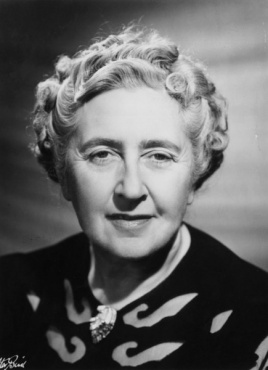

无人生还
[英] 阿加莎·克里斯蒂
字数：约10万字
定价：16元/本
来源：book.guyizhou.cn
类型：悬疑 · 推理侦探
8.9分
🟊🟊🟊🟊🟊
十个互不相识的人，被富有的欧文先生邀请到了印地安岛上的私人别墅里。晚餐后，一个神秘的声音揭开了人们心中所各自隐藏着的可怕秘密。当天晚上，年轻的马斯顿先生离奇死去，古老的童谣就像诅咒一样笼罩着所有人，似乎有一双神秘的眼镜在时刻窥视着这场死亡游戏，到访者就像消失的印地安小瓷人一样一个又一个的走向死神……
开始阅读
加入书架
章节（共17章）
第1章
第2章
第3章
第4章
第5章
第6章
第7章
第8章
第9章
第10章
第11章
第12章
第13章
第14章
第15章
第16章
尾声
作者介绍
阿加莎·克里斯蒂
Agatha Christie

出生
1890年9月15日
英格兰德文郡托奇
逝世
1976年1月12日（85岁）
英格兰牛津郡沃灵福德
墓地
Church of St Mary, Cholsey, Oxfordshire, England
职业
小说家、剧作家、诗人
体裁
谋杀悬疑小说、惊悚小说、侦探小说、爱情小说
文学运动
侦探小说黄金时代
配偶
Archibald Christie
(m. 1914; div. 1928)
Sir Max Mallowan
(m. 1930–76; her death)
兒女
Rosalind Hicks (1919–2004)
受影响于
爱伦·坡、安妮·凯瑟琳·格林、阿瑟·柯南·道尔爵士、切斯特顿